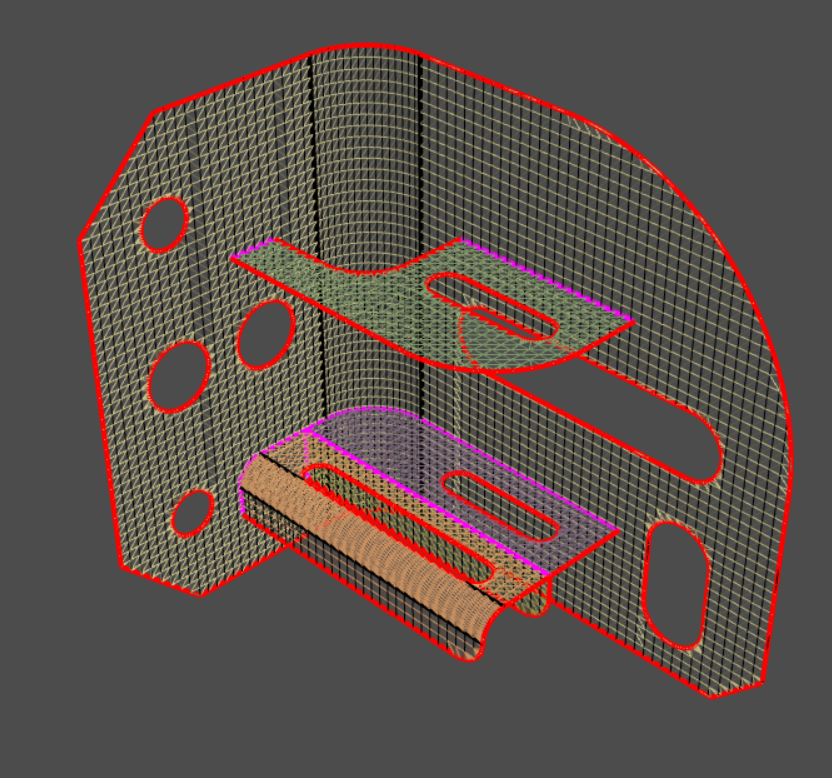

Note
Go to the end to download the full example code.
Mesh a mid-surfaced bracket for a structural analysis#
Summary: This example demonstrates how to use topology-based connection to generate conformal surface mesh.
Objective#
To create conformal surface mesh, you can scaffold topofaces, topoedges, or both to connect all the surface bodies and mesh the bracket with quad elements.
{kind=link}
Procedure#
Launch Ansys Prime Server.
Import the CAD geometry and create the part per the CAD model.
Scaffold topofaces and topoedges with a tolerance parameter.
Surface mesh topofaces with a constant size and generate quad elements.
Write a CDB file for use in the APDL solver.
Exit the PyPrimeMesh session.
Launch Ansys Prime Server#
Import all necessary modules. Launch an instance of Ansys Prime Server. Connect the PyPrimeMesh client and get the model.
import os
import tempfile
from ansys.meshing import prime
from ansys.meshing.prime.graphics import PrimePlotter
prime_client = prime.launch_prime()
model = prime_client.model
Using Ansys Prime Server from container ansys-prime-server-2
Import CAD geometry#
Download the bracket geometry (FMD) file exported by SpaceClaim. Import the CAD geometry. Create the part per the CAD model for the topology-based connection.
# For Windows OS users, scdoc is also available:
# bracket_file = prime.examples.download_bracket_scdoc()
bracket_file = prime.examples.download_bracket_fmd()
file_io = prime.FileIO(model)
file_io.import_cad(
file_name=bracket_file,
params=prime.ImportCadParams(
model=model,
length_unit=prime.LengthUnit.MM,
part_creation_type=prime.PartCreationType.MODEL,
),
)
<ansys.meshing.prime.autogen.fileiostructs.ImportCadResults object at 0x7f46ed897cd0>
Review the part#
Get the part summary.
Display the model to show edges by connection.
Use keyboard shortcuts to switch between
the surface (s) and wireframe (w) representations.
Color code for edge connectivity:
Red: free
Black: double
Purple: triple
part = model.get_part_by_name('bracket_mid_surface-3')
part_summary_res = part.get_summary(prime.PartSummaryParams(model, print_mesh=False))
print(part_summary_res)
display = PrimePlotter()
display.add_model(model)
display.show()
message :
Part Name: bracket_mid_surface-3
Part ID: 2
67 Topo Edges
9 Topo Faces
0 Topo Volumes
0 Edge Zones
Edge Zone Name(s) : []
5 Face Zones
Face Zone Name(s) : [midsurface1.1, midsurface2, midsurface3, midsurface4, midsurface1.2]
0 Volume Zones
Volume Zone Name(s) : []
3 Label(s)
Names: [back, hole_d14, hole_d20]
Bounding box (1 1 0)
(20 30 30)
n_topo_edges : 67
n_topo_faces : 9
n_topo_volumes : 0
n_edge_zonelets : 0
n_face_zonelets : 0
n_cell_zonelets : 0
n_edge_zones : 0
n_face_zones : 5
n_volume_zones : 0
n_labels : 3
n_nodes : 0
n_faces : 0
n_cells : 0
n_tri_faces : 0
n_poly_faces : 0
n_quad_faces : 0
n_second_order_tri_faces : 0
n_second_order_quad_faces : 0
n_tet_cells : 0
n_pyra_cells : 0
n_prism_cells : 0
n_poly_cells : 0
n_hex_cells : 0
n_second_order_tet_cells : 0
n_second_order_pyra_cells : 0
n_second_order_prism_cells : 0
n_second_order_hex_cells : 0
n_unmeshed_topo_faces : 0
Connection#
Initialize the connection tolerance and other parameters. (The connection tolerance is smaller than the target element size.) Scaffold the topofaces, topoedges, or both with connection parameters.
# Target element size
element_size = 0.5
params = prime.ScaffolderParams(
model,
absolute_dist_tol=0.1 * element_size,
intersection_control_mask=prime.IntersectionMask.FACEFACEANDEDGEEDGE,
constant_mesh_size=element_size,
)
# Get existing topoface or topoedge IDs
faces = part.get_topo_faces()
beams = []
scaffold_res = prime.Scaffolder(model, part.id).scaffold_topo_faces_and_beams(
topo_faces=faces, topo_beams=beams, params=params
)
print(scaffold_res)
n_incomplete_topo_faces : 0
error_code : ErrorCode.NOERROR
Surface mesh#
Initialize surface meshing parameters. Mesh topofaces with the constant size and generate quad elements.
surfer_params = prime.SurferParams(
model=model,
size_field_type=prime.SizeFieldType.CONSTANT,
constant_size=element_size,
generate_quads=True,
)
surfer_result = prime.Surfer(model).mesh_topo_faces(part.id, topo_faces=faces, params=surfer_params)
# Display the mesh
pl = PrimePlotter()
pl.plot(model, update=True)
pl.show()
Write mesh#
Write a CDB file for use in the APDL solver.
with tempfile.TemporaryDirectory() as temp_folder:
mapdl_cdb = os.path.join(temp_folder, 'bracket_scaffold.cdb')
file_io.export_mapdl_cdb(mapdl_cdb, params=prime.ExportMapdlCdbParams(model))
assert os.path.exists(mapdl_cdb)
print(f'MAPDL case exported at {mapdl_cdb}')
This get_abaqus_simulation_data is a beta API. The behavior and implementation may change in future.
/home/runner/work/pyprimemesh/pyprimemesh/.venv/lib/python3.10/site-packages/ansys/meshing/prime/core/fileio.py:336: PrimeRuntimeWarning: Export of a zonelet skipped while exporting a label as element component. Disable the parameter enable_face_based_labels in ExportMapdlCdbParams to export the label as node component.
result = super().export_mapdl_cdb(temp_file_name, params)
MAPDL case exported at /tmp/tmpq4y_rmgx/bracket_scaffold.cdb
Exit the PyPrimeMesh session#
prime_client.exit()
Total running time of the script: (0 minutes 17.055 seconds)